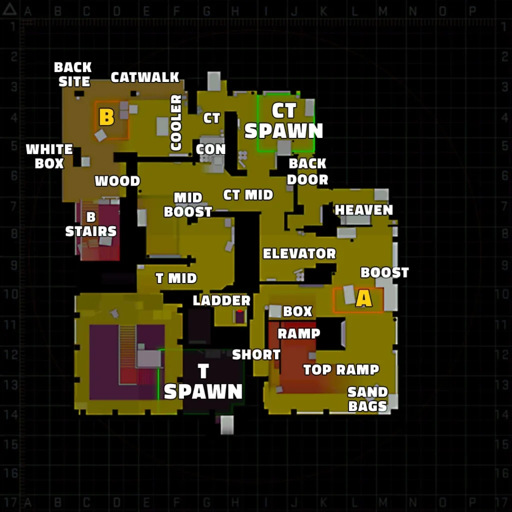

Vertigo es mi mapa favorito, está ambientado en la cima de un rascacielos en una ciudad, una particularidad del mapa es que tiene mucha verticalidad, es decir, que tiene varias "alturas", lo que permite rotaciones rápidas y partidas frenéticas, además es un mapa que suele recibir cambios de forma relativamente frecuente así que no me aburro de él por más que lo juegue. Si hay algo que no me gusta del mapa es que es de los más complicados de jugar por lo que es común que el equipo no juegue adecuadamente.
